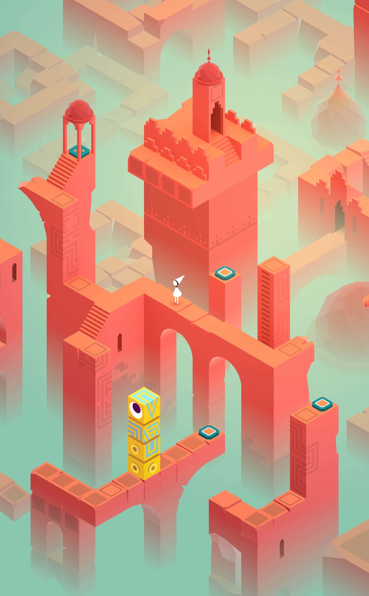

Colophon
colophon (noun)
col • o • phon /ˈkä-lə-fən, -fän/ /ˈkɒləfən, -fɒn/
- an inscription at the end of a book or manuscript containing information about its production
- this page
Technology
- Last built: 2025-10-16 at 01:04:28 US Eastern
- Software: Quarto version 1.8.25 and R version 4.5.1 (2025-06-13)
- Hosting: Hosted at GitHub Pages and built and deployed using GitHub Actions
Design
The typography, colors, and custom CSS settings are all controlled with this _brand.yml file:
Show _brand.yml for this site
_brand.yml
#
# _brand.yml for Quarto websites mini course
#
meta:
name: Quarto website course
license: CC BY-SA 4.0
link:
home: https://www.andrewheiss.com/
color:
# Colors from MoMAColors::moma.colors("ustwo"), supplemented with CARTOColors (Prism)
palette:
blue: "#008d98" # ustwo
indigo: "#5F4690" # Prism
purple: "#994E95" # Prism
pink: "#f06a63" # ustwo
red: "#d7433b" # ustwo
orange: "#ff8e5e" # ustwo
yellow: "#ffcc3d" # ustwo
green: "#0F8554" # Prism
teal: "#38A6A5" # Prism
cyan: "#95caa6" # ustwo
gray-100: "#f8f9fa"
gray-200: "#e9ecef"
gray-300: "#dddddd"
gray-400: "#ced4da"
gray-500: "#adb5bd"
gray-600: "#868e96"
gray-700: "#495057"
gray-800: "#343a40"
gray-900: "#212529"
off-white: "#F5F5F5"
black: "#111111"
light-gray: "#cdcdcd"
foreground: black
background: off-white
primary: red
secondary: blue
tertiary: teal
dark: black
typography:
fonts:
- family: Open Sans
source: google
weight: [400, 700]
- family: Alan Sans
source: google
weight: [400, 500, 700]
base:
family: Open Sans
weight: 400
headings:
family: Alan Sans
weight: 700
color: red
link:
weight: 700
color: orange
decoration: none
defaults:
bootstrap:
functions: # string with SCSS functions
defaults: # list of Bootstrap Sass variables to override
link-hover-color: $brand-pink
font-family-headings: Alan Sans
navbar-font-family: Alan Sans
code-color: $brand-indigo
font-size-base: 1rem
h1-font-size: $font-size-base * 2.45
h2-font-size: $font-size-base * 1.85
h3-font-size: $font-size-base * 1.45
h4-font-size: $font-size-base * 1.2
h5-font-size: $font-size-base * 1
h6-font-size: $font-size-base * 0.8
# code-bg: lighten($brand-orange, 25%) # Sass functions work here!
code-bg: rgba(233, 236, 239, 0.65) # Same color as github div background
mixins: # string with SCSS mixins
rules: | # string with SCSS rules
#quarto-document-content h3 {
color: $brand-blue;
font-weight: 500;
}
.navbar-title {
font-size: 1.3em;
}(See more about brand.yml here).
Typefaces
I use Open Sans (Google Fonts) as the main body font throughout the site, and I use Alan Sans (Google Fonts) for all headings.
A heading
Whereas recognition of the inherent dignity and of the equal and inalienable rights of all members of the human family is the foundation of freedom, justice and peace in the world…
Colors
The colors for this course website come primarily from the “ustwo” palette from the {MoMAColors} R package. The colors come from the video game Monument Valley, developed and produced by ustwo, and is one of only a few pieces of software-based art in the MoMA (see its MoMA page).

Since this palette only has 6 colors, I supplement it with a few colors from the qualitative Prism palette from CARTOColors:
License and credits
All the materials and content for this course are licensed under Creative Commons CC-BY-SA .
Some of the materials in the course were adapted from Isabella Velásquez and Sara Altman’s posit::conf(2025) workshop on branded Quarto documents ( GitHub repository). They graciously licensed their content under Creative Commons CC-BY-SA .